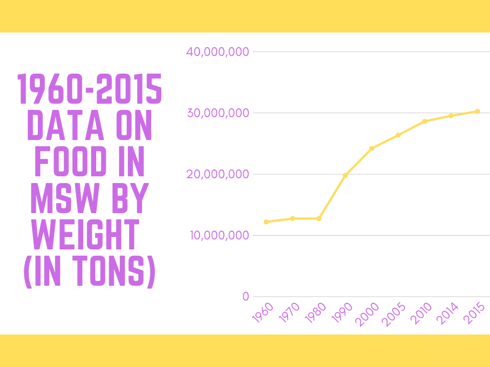
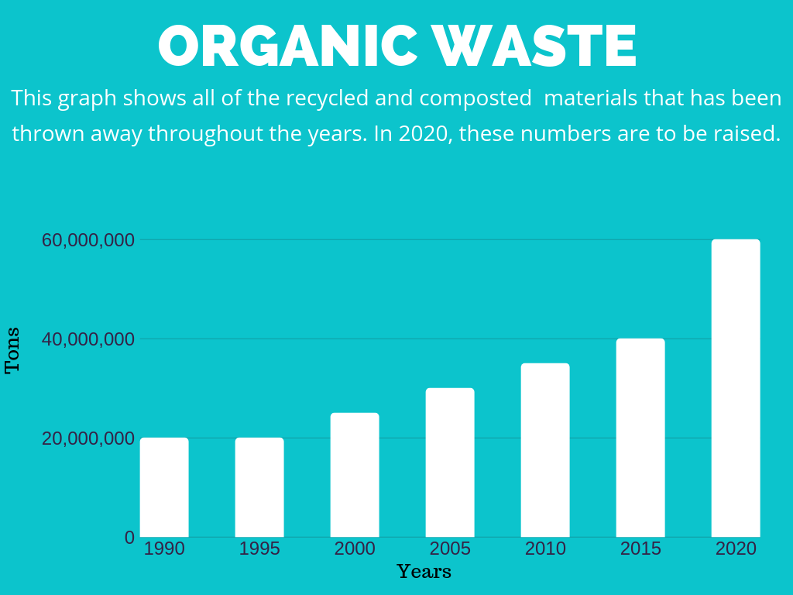

Organic Waste
Organic waste is biodegradable and comes from a plant or an animal.
It is broken down by organisms over time. Most of organic waste is food waste.
About 1.3 billion tons of food are wasted every year. This waste is especially prominent in meat.
There are about 50 million chickens, 1.5 million pigs, and 100,000 beef cattle. This is about 12
billion farm animals globally, most of which end up getting wasted. To help this issue, cut back
on your meat intake. All of the food going to waste could be enough
calories to feed every undernourished person on Earth.

EPA estimated food from residential and commercial sources using data from sampling
studies in various parts of the country in combination with demographic data on
population, grocery store sales, restaurant sales, numbers of employees, and numbers
of students, patients and prisoners in institutions. Composting data was from state
environmental agency websites. Source: EPA

Organic Waste:
These studies provide us with equations that expresses generation rates which, when
paired with industry business statistics, it results in national annual food waste generation
rates. This estimates 60.0 million tons of food waste will be generated in 2020, or more,
if we do not provide for our environment.